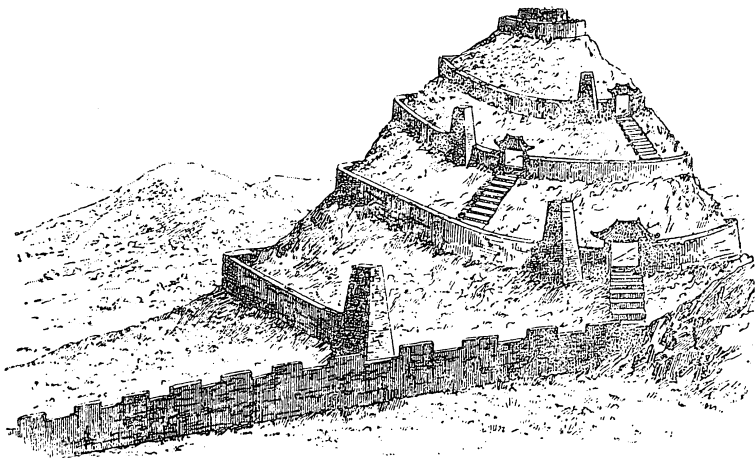

THÀNH CỔ-LOA
Suốt lịch sử Việt Nam, một nhân vật lỗi lạc nhứt trong thời đại của người từ Đông sang Tây lại bị hậu thế đối xử thật bất công, đó là HỒ QUÍ LY.
Nói đến HỒ QUÍ LY, đại đa số người Việt Nam đã đọc qua lịch sử nước nhà, đều nghĩ ngay đến một kẻ soán nghịch, một gian thần cướp ngôi nhà Trần.
Nền luân lý Khổng Mạnh, vị thần giữ nhà của chế độ quân chủ, đã đầu độc dân ta hằng bao nhiêu thế kỷ, dạy người dân thần thánh hóa vua chúa, trung quân một cách mù quáng, và từ đó nảy sanh thành kiến trọng chính thống, thẳng tay kết án tất cả những ai nắm quyền bằng một đường lối khác hơn là truyền tử lưu tôn trong một triều đại đã có sẳn, dầu những ông vua cuối triều – con cháu của một đấng anh hùng dân tộc hoặc của một kẻ đoạt ngôi cũng thế – đã bị hủ hóa, trở thành những cá nhân vô giá trị, gian dâm vô đạo, ngu xuẩn hay tàn bạo, hại dân hại nước. Một LÊ CHIÊU THỐNG dắt voi về dầy mồ, suýt dâng tổ quốc cho quân Thanh xâm lăng chà đạp nếu không có một chiến lược gia thần tốc, một NẢ PHÁ LUÂN Việt Nam – một NẢ PHÁ LUÂN bất bại – đứng lên đánh đuổi bọn ngoại xâm tham tàn trong vài trận đánh chớp nhoáng sáng chói vào bực nhứt lịch sử, thì một ông vua tâm địa nhỏ nhen hèn hạ, ông vua đầy tội lỗi với dân tộc như vậy, vẫn được đẳng cấp sĩ phu đương thời, trong đó có những nhà đại trí thức, triệt để trung thành, sẳn lòng chết cho cá nhân tồi tệ ấy. Cả một đám di thần, thà chịu mai một tài danh, tức là hủy bỏ, phá hoại một phần quan trọng của nguồn tài nguyên quốc gia là nhân lực – hơn là mang tài sức phụng sự đất nước dưới một triệu đại khác xứng đáng hơn. Một đại thi hào như NGUYỄN DU, vẫn mang cái mặc cảm di thần nhà Lê nghĩa là trung với ông vua phản quốc kia – cho đến chết.
Chính cái tinh thần hẹp hòi trọng chính thống của đẳng cấp nho sĩ thời Trần Mạt – cũng là giai cấp thống trị trong xã hội Việt Nam thời ấy – trong một thời đại mà trình độ trưởng thành chính trị của quần chúng quá thấp kém, và quần chúng lại chịu ảnh hưởng nặng nề của giai cấp thống trị ấy, đã nối giáo cho giặc Minh, tiêu diệt cha con họ Hồ, làm sụp đổ cả một chương trình cải cách quốc gia tiến bộ nhứt thời đại, xuất phát từ một bộ óc thông minh nhứt thế kỷ từ Đông sang Tây và cũng vì đó mà nước Việt Nam mất một dịp canh tân, có thể biến cái quốc gia nhỏ bé nầy thành một cường quốc lãnh đạo cả Á Châu, nếu trình độ giác ngộ quyền lợi của quần chúng Việt Nam thời ấy chấp nhận được « hiện tượng HỒ QUÍ LY. »
Nhưng nếu đẳng cấp nho sĩ xem HỒ QUÍ LY là một kẻ thoán đoạt không hơn không kém, chẳng cần kể đến chân tài và tính cách tiến bộ vượt bực của chương trình họ Hồ, là vì quyền lợi của họ bị đụng chạm, địa vị của họ bị lung lay ; nếu nhân dân thời bấy giờ không tán thành nhà Hồ là vì họ chịu ảnh hưởng trực tiếp của đẳng cấp nho sĩ – cũng là giai cấp lãnh đạo – mà họ xem như khuôn vàng thước ngọc ; nếu các sử thần và sử gia thời sau vẫn xem Hồ Quí Ly là kẻ giựt ngôi là vì truyền thống tinh thần đẳng cấp hoặc vì họ đang phục vụ chế độ quân chủ ; nhưng chúng ta ngày nay, những người dân chủ, không có bổn phận triệt để trung thành với một cá nhân nào cả, chúng ta phải có thái độ nào đối với tiền nhân?
Quan niệm về luân lí, về công và tội của chúng ta khác biệt hẳn với các thời đại trước.
Hồ Quí Ly có đoạt ngôi nhà Trần hay không? Điều đó đối với chúng ta không quan trọng. Điều quan trọng là động cơ nào đã thúc đẩy Hồ Quí Ly lật đổ nhà Trần?
Tìm hiểu được động cơ này, xét qua chân giá trị của họ Hồ và toàn bộ sự nghiệp của con người lịch sử ấy, ta mới có thể quả quyết Hồ Quý Ly có công hay có tội với đất nước và nhân dân Việt Nam.
Người xưa, vì những quan niệm luân lý hẹp hòi, vì những thành kiến khắc khe của xã hội, vì những hoàn cảnh lịch sử đặc biệt, đã chịu quá nhiều bất công và thiệt thòi rồi.
Các bậc anh hùng, nghĩa sĩ hành động oanh oanh liệt liệt, nhưng tài bất thắng thời, hy sinh cả thân thể, sự nghiệp, tánh mạng của mình và có khi của cả gia tộc ; những bậc chân tài cặm cụi cả đời họ phụng sự cho một lý tưởng, chịu nghèo khó, khổ cực nhục nhã ; tất cả những người đó đều muốn ghi tên trong lịch sử để lại danh thơm cho đời sau.
Bổn phận của hậu thế là phải công bình đối với họ.